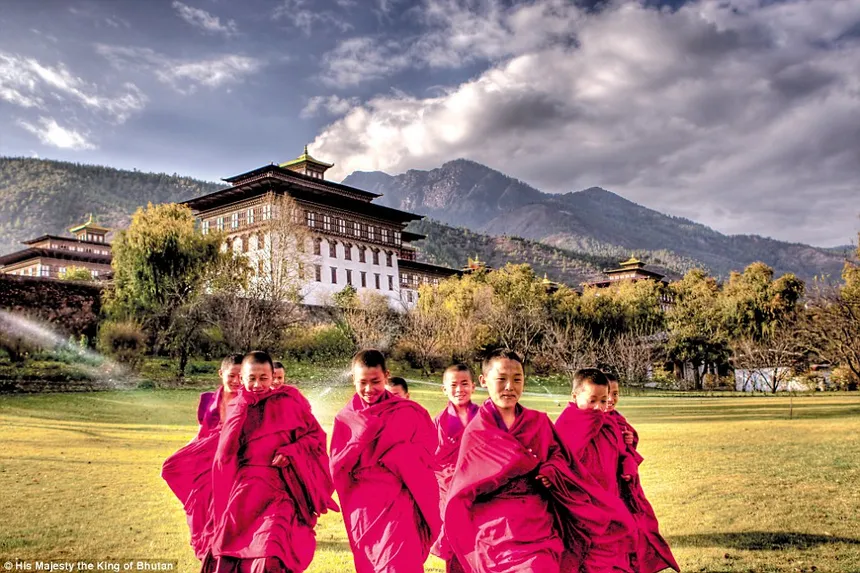
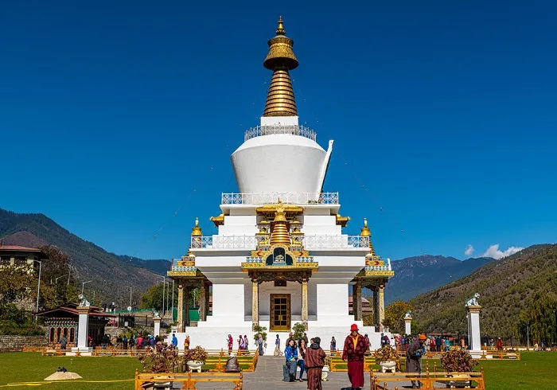

Bhutan's Cultural Heritage
 Having always been politically independent, a rich and distinctive culture developed in the country over the ages. Perhaps the most important single factor in the moulding of Bhutanese character and thought has been the teaching of Load Bhuddha , whose eternal truths were first brought into the country from Tibet over the high, snow-bound mountain Passes by the great Indian saint, Guru Padmasambhava.
In the Buddhist perspective, culture, tradition and beliefs and the environment are dynamic phenomena that are interwoven tightly in the web of life. As a Buddhist philosopher say, 'Culture lies not in objects or monuments but in the mind and compassion towards all sentient beings'.
Bhutan's unique cultural and traditional ethos, highly valued in themselves by all the population , are the essential embodiments of the nation's identity. For a small country located between the two most populated countries of the world , India and China, the preservation and promotion of its distinct cultural identity are seen as an important means for its survival as an independent and sovereign Kingdom. It was this identity that has protected and sustained Bhutan and also provided the foundation for its major policies.
ArchitectureIn terms of quality and originality, Bhutanese architecture is without doubt one of the best expression of the character. Almost completely isolated for several centuries owing to its complex geography, Bhutan has indeed seen very few changes in its architectural system since the earliest times. The main roots of its architecture go to Tibet, which was itself in relation to China and faraway Persia, thanks to traders travelling on the silk route. Drawing inspiration from older forms and ideas, the architects of Bhutan developed a style that is peculiar to their own country. Displaying a great sense of innovation, they made each dzong, temple and monastery a unique creation, different from all others but at the same time maintaining a perfect unity of architectural style throughout the country. Each of these buildings was designed and built to harmonize with the environment and fulfil certain specific functions and many of them are true masterpieces.
Chortens The commonest structures in Bhutan are not the great fortresses but 'Chortens', which are also known as 'Stupas'. There are numerous Chortens all over the country, ranging in size from very small to large. Witness to the profound faith of the Bhutanese, they can be found at crossroads, near a Dzong or a Monastery and on high mountain passes and all of them have an indefinable presence, radiating serenity and peace.
LhakhangsLhakhangs (temples) are fairly small buildings of simple design, seem to have been the first forms of religious architecture. Built in simple design they are likely to comprise one storey around a small enclosed courtyard and differ from ordinary houses by red band painted on the upper part of their walls and an ornament of gilded copper on the roof. Inside, the walls are completely covered with religious paintings.
GoembasBhutanese Goembas (monasteries) can be divided into two types: 'Cluster type' which consists of a core formed by one or two temples with various dwelling structures grouped around such as Dzongdrakha in Paro valley Phajoding in Thimphu valley and Tharpaling in the Bumthang valley . The second category 'Dzong type' is built like a fortress with the central tower enclosing the temple and surrounded by exterior walls against which are built monks cells and service rooms. The most impressive example of Dzong type goembas is the monastery of Gangtey and Tango in upper Thimphu valley.